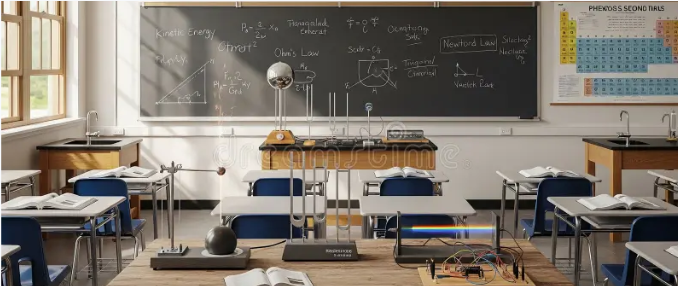

Salón de ciencias
Espacio equipado para aprender e innovar

Cuenta con
Material de laboratorio
Microscopios, probetas y otros instrumentos para realizar prácticas científicas.
Recursos educativos
Modelos, muestras y materiales para estudiar Biología, Física y Química.
Zona de experimentación
Mesas amplias y resistentes para desarrollar actividades de forma organizada.
Espacio organizado
Áreas destinadas al almacenamiento y clasificación de instrumentos científicos.
Protección y prevención
Elementos de seguridad para trabajar correctamente durante los experimentos.
Aprendizaje práctico
Permite investigar, comprobar teorías y trabajar en proyectos grupales.